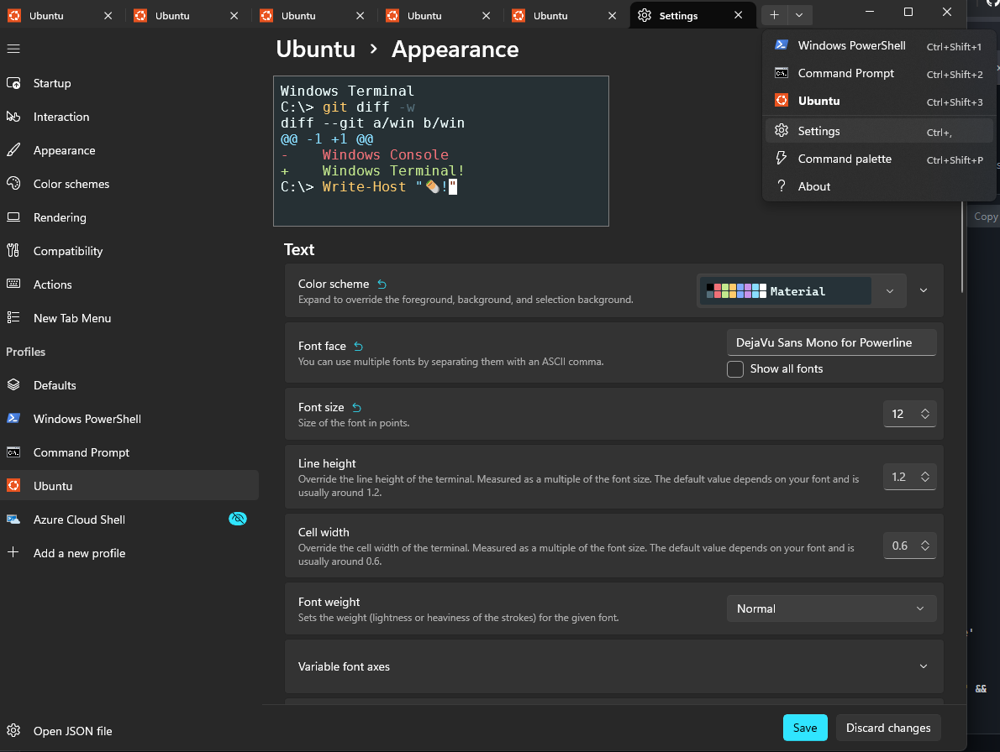

Install zsh, Oh My Zsh, and the agnoster theme with Powerline fonts.
Run this in your WSL terminal (needs your password):
sudo apt update && sudo apt install -y zsh && chsh -s $(which zsh)
The agnoster theme needs a Powerline-patched font for its arrow characters. Install this on Windows (not inside WSL):
.ttf fileCopy this prompt and paste it into Claude Code. Everything here can run without sudo.
Click the copy button on the code block.
Open Claude Code in your WSL terminal and paste it in.
Claude will install Oh My Zsh, configure the theme, and install fonts. Accept the permission prompts as it goes.
Set up Oh My Zsh with the agnoster theme on my WSL environment. Zsh is already installed and set as my default shell. Do the following steps:
1. Install Oh My Zsh (no sudo needed):
- Run the unattended installer: sh -c "$(curl -fsSL https://raw.githubusercontent.com/ohmyzsh/ohmyzsh/master/tools/install.sh)" "" --unattended
2. Migrate config from bash (IMPORTANT — do this before anything else):
- Read ~/.bashrc and identify any custom additions: PATH exports, nvm setup, aliases, environment variables, or anything that isn't a default Ubuntu comment/block
- If there are custom lines, add them to the END of ~/.zshrc (after the "source $ZSH/oh-my-zsh.sh" line)
- At minimum, make sure ~/.zshrc contains: export PATH="$HOME/.local/bin:$PATH"
- Do NOT duplicate anything already in ~/.zshrc
- Do NOT modify the Oh My Zsh config at the top of ~/.zshrc
- If ~/.bashrc has nvm setup, skip it — the nvm guide handles that separately
3. Set the agnoster theme:
- Edit ~/.zshrc and change ZSH_THEME="robbyrussell" to ZSH_THEME="agnoster"
4. Check that the Powerline font is installed on Windows:
- Find my Windows username by listing /mnt/c/Users/ (skip Public, Default, and "Default User")
- Check if "DejaVu Sans Mono for Powerline" exists in either:
/mnt/c/Windows/Fonts/ or /mnt/c/Users/USERNAME/AppData/Local/Microsoft/Windows/Fonts/
- Search for files matching *DejaVu*Powerline*
- If not found, tell me to install it manually: download the .ttf from https://github.com/powerline/fonts and double-click to install on Windows
5. Configure Windows Terminal (font, color scheme, and appearance):
- Find my Windows username by listing /mnt/c/Users/ (skip Public, Default, and "Default User")
- Using that username, find the Windows Terminal settings.json:
/mnt/c/Users/{username}/AppData/Local/Packages/Microsoft.WindowsTerminal*/LocalState/settings.json
Use a glob — the package folder varies (e.g. Microsoft.WindowsTerminal_*, Microsoft.WindowsTerminalPreview_*)
- Add the "Material" color scheme to the "schemes" array if it doesn't already exist:
{
"background": "#263238",
"black": "#000000",
"blue": "#82AAFF",
"brightBlack": "#546E7A",
"brightBlue": "#82AAFF",
"brightCyan": "#89DDFF",
"brightGreen": "#C3E88D",
"brightPurple": "#C792EA",
"brightRed": "#F07178",
"brightWhite": "#FFFFFF",
"brightYellow": "#FFCB6B",
"cursorColor": "#FFFFFF",
"cyan": "#89DDFF",
"foreground": "#EEFFFF",
"green": "#C3E88D",
"name": "Material",
"purple": "#C792EA",
"red": "#F07178",
"selectionBackground": "#FFFFFF",
"white": "#FFFFFF",
"yellow": "#FFCB6B"
}
- Find the WSL/Ubuntu profile in the "profiles" > "list" array (look for a commandline containing "wsl.exe") and set/add these properties:
"colorScheme": "Material"
"cursorShape": "filledBox"
"font": { "face": "DejaVu Sans Mono for Powerline", "size": 12 }
"opacity": 80
"startingDirectory": "~"
- Do NOT change the profile's guid, name, commandline, icon, or any other existing properties
- Make sure the resulting file is valid JSON
6. Tell me to also set my VS Code terminal font:
- Set terminal.integrated.fontFamily to 'DejaVu Sans Mono for Powerline'
7. Verify the setup by running: zsh -c 'source ~/.zshrc && echo "Theme: $ZSH_THEME" && echo "Oh My Zsh: $ZSH"'
Claude will configure Windows Terminal automatically. If you need to verify or adjust settings manually, here's what it sets:

{
"terminal.integrated.fontFamily": "DejaVu Sans Mono for Powerline",
"terminal.integrated.fontSize": 12
}
Once done, open a new terminal tab and you should see the full agnoster prompt with arrows, git branch info, and status indicators.
Commands like claude, node, or npm stopped working after setup
Switching from bash to zsh means your ~/.bashrc is no longer loaded. Any PATH additions, aliases, or environment variables you had in bash need to be in ~/.zshrc instead. The Claude prompt above handles this migration automatically, but if something was missed:
cat ~/.bashrc~/.zshrcQuick fix if claude is the only thing missing:
echo 'export PATH="$HOME/.local/bin:$PATH"' >> ~/.zshrc